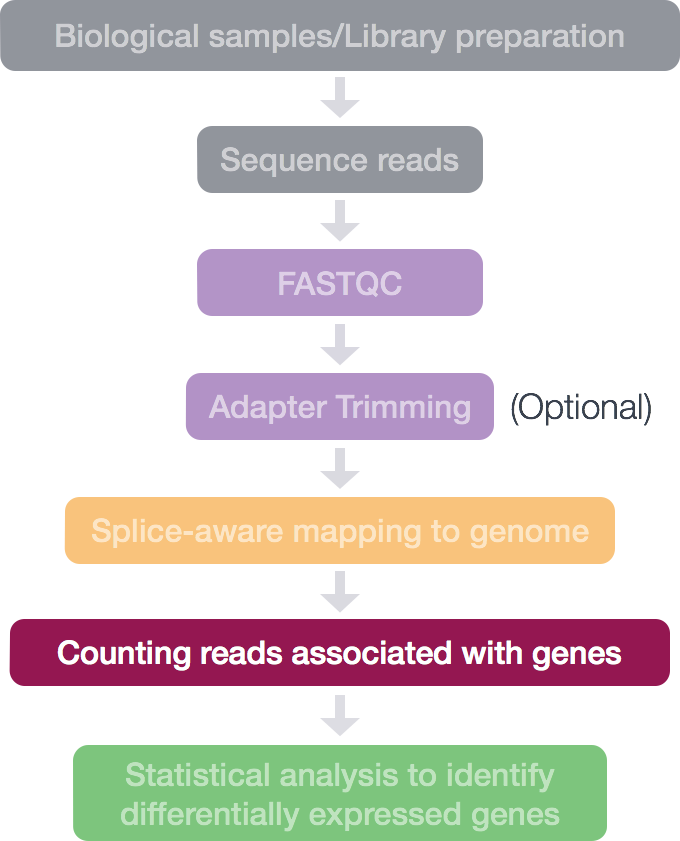

Approximate time: 75 minutes
Learning Objectives:
- understand how counting tools work
- generate a count matrix using featureCounts
Counting reads as a measure of gene expression

Once we have our reads aligned to the genome, the next step is to count how many reads have mapped to each gene. There are many tools that can use BAM files as input and output the number of reads (counts) associated with each feature of interest (genes, exons, transcripts, etc.). 2 commonly used counting tools are featureCounts and htseq-count.
-
The above tools only report the “raw” counts of reads that map to a single location (uniquely mapping) and are best at counting at the gene level. Essentially, total read count associated with a gene (meta-feature) = the sum of reads associated with each of the exons (feature) that “belong” to that gene.
-
There are other tools available that are able to account for multiple transcripts for a given gene. In this case the counts are not whole numbers, but have fractions. In the simplest example case, if 1 read is associated with 2 transcripts, it can get counted as 0.5 and 0.5 and the resulting count for that transcript is not a whole number.
-
In addition there are other tools that will count multimapping reads, but this is a dangerous thing to do since you will be overcounting the total number of reads which can cause issues with normalization and eventually with accuracy of differential gene expression results.
Input for counting = multiple BAM files + 1 GTF file
Simply speaking, the genomic coordinates of where the read is mapped (BAM) are cross-referenced with the genomic coordinates of whichever feature you are interested in counting expression of (GTF), it can be exons, genes or transcripts.

Output of counting = A count matrix, with genes as rows and samples are columns
These are the “raw” counts and will be used in statistical programs downstream for differential gene expression.

Counting using featureCounts
Today, we will be using the featureCounts tool to get the gene counts. We picked this tool because it is accurate, fast and is relatively easy to use. It counts reads that map to a single location (uniquely mapping) and follows the scheme in the figure below for assigning reads to a gene/exon.

featureCounts can also take into account whether your data are stranded or not. If strandedness is specified, then in addition to considering the genomic coordinates it will also take the strand into account for counting. If your data are stranded always specify it.
Setting up to run featureCounts
First things first, start an interactive session with 4 cores:
$ srun --pty -p interactive -t 0-12:00 -n 4 --mem 8G --reservation=HBC1 /bin/bash
Now, change directories to your rnaseq directory and start by creating 2 directories, (1) a directory for the output and (2) a directory for the bam files:
$ cd ~/rnaseq/
$ mkdir results/counts results/STAR/bams
Rather than using the BAM file we generated in the last lesson, let’s copy over all of the BAM files that we have already generated for you:
$ cp /n/groups/hbctraining/intro_rnaseq_hpc/bam_STAR/*bam ~/rnaseq/results/STAR/bams
featureCounts is not available as a module on O2, but we have already added the path for it to our $PATH variable last time.
$ echo $PATH # You should see /n/app/bcbio/tools/bin/ among other paths
** If you don’t see
/n/app/bcbio/tools/bin/in your$PATHvariable, add the followingexportcommand to your~/.bashrcfile using vim:export PATH=/n/app/bcbio/tools/bin/:$PATH.**
Running featureCounts
How do we use this tool, what is the command and what options/parameters are available to us?
$ featureCounts
So, it looks like the usage is featureCounts [options] -a <annotation_file> -o <output_file> input_file1 [input_file2] ... , where -a, -o and input files are required.
We are going to use the following options:
-T 4 # specify 4 cores
-s 2 # these data are "reverse"ly stranded
and the following are the values for the required parameters:
-a ~/rnaseq/reference_data/chr1-hg19_genes.gtf # required option for specifying path to GTF
-o ~/rnaseq/results/counts/Mov10_featurecounts.txt # required option for specifying path to, and name of the text output (count matrix)
~/rnaseq/results/STAR/bams/*bam # the list of all the bam files we want to collect count information for
Let’s run this now:
$ featureCounts -T 4 -s 2 \
-a /n/groups/hbctraining/intro_rnaseq_hpc/reference_data_ensembl38/Homo_sapiens.GRCh38.92.gtf \
-o ~/rnaseq/results/counts/Mov10_featurecounts.txt \
~/rnaseq/results/STAR/bams/*.out.bam
If you wanted to collect the information that is on the screen as the job runs, you can modify the command and add the
2>redirection at the end. This type of redirection will collect all the information from the terminal/screen into a file.
# **DO NOT RUN THIS**
# note the last line of the command below
$ featureCounts -T 4 -s 2 \
-a /n/groups/hbctraining/intro_rnaseq_hpc/reference_data_ensembl38/Homo_sapiens.GRCh38.92.gtf \
-o ~/rnaseq/results/counts/Mov10_featurecounts.txt \
~/rnaseq/results/STAR/bams/*.out.bam \
2> /unix_lesson/rnaseq/results/counts/Mov10_featurecounts.screen-output
featureCounts output
The output of this tool is 2 files, a count matrix and a summary file that tabulates how many the reads were “assigned” or counted and the reason they remained “unassigned”. Let’s take a look at the summary file:
$ less results/counts/Mov10_featurecounts.txt.summary
Now let’s look at the count matrix:
$ less results/counts/Mov10_featurecounts.txt
Cleaning up the featureCounts matrix
There is information about the genomic coordinates and the length of the gene, we don’t need this for the next step, so we are going to extract the columns that we are interested in.
$ cut -f1,7,8,9,10,11,12 results/counts/Mov10_featurecounts.txt > results/counts/Mov10_featurecounts.Rmatrix.txt
The next step is to clean it up a little further by modifying the header line (we could also do this in R, or in a GUI text editor):
$ vim results/counts/Mov10_featurecounts.Rmatrix.txt
Vim has nice shortcuts for cleaning up the header of our file using the following steps:
- Move the cursor to the beginning of the document by typing:
gg(in command mode). - Remove the first line by typing:
dd(in command mode). - Remove the file name following the sample name by typing:
:%s/_Aligned.sortedByCoord.out.bam//g(in command mode). -
Remove the path leading up to the file name by typing:
:%s/\/home\/username\/unix_lesson\/rnaseq\/results\/STAR\/bams\///g(in command mode).Note that we have a
\preceding each/, which tells vim that we are not using the/as part of our search and replace command, but instead the/is part of the pattern that we are replacing. This is called escaping the/.
Note on counting PE data
For paired-end (PE) data, the bam file contains information about whether both read1 and read2 mapped and if they were at roughly the correct distance from each other, that is to say if they were “properly” paired. For most counting tools, only properly paired reads are considered by default, and each read pair is counted only once as a single “fragment”.
For counting PE fragments associated with genes, the input bam files need to be sorted by read name (i.e. alignment information about both read pairs in adjoining rows). The alignment tool might sort them for you, but watch out for how the sorting was done. If they are sorted by coordinates (like with STAR), you will need to use samtools sort to re-sort them by read name before using as input in featureCounts. If you do not sort you BAM file by read name before using as input, featureCounts assumes that almost all the reads are not properly paired.
This lesson has been developed by members of the teaching team at the Harvard Chan Bioinformatics Core (HBC). These are open access materials distributed under the terms of the Creative Commons Attribution license (CC BY 4.0), which permits unrestricted use, distribution, and reproduction in any medium, provided the original author and source are credited.